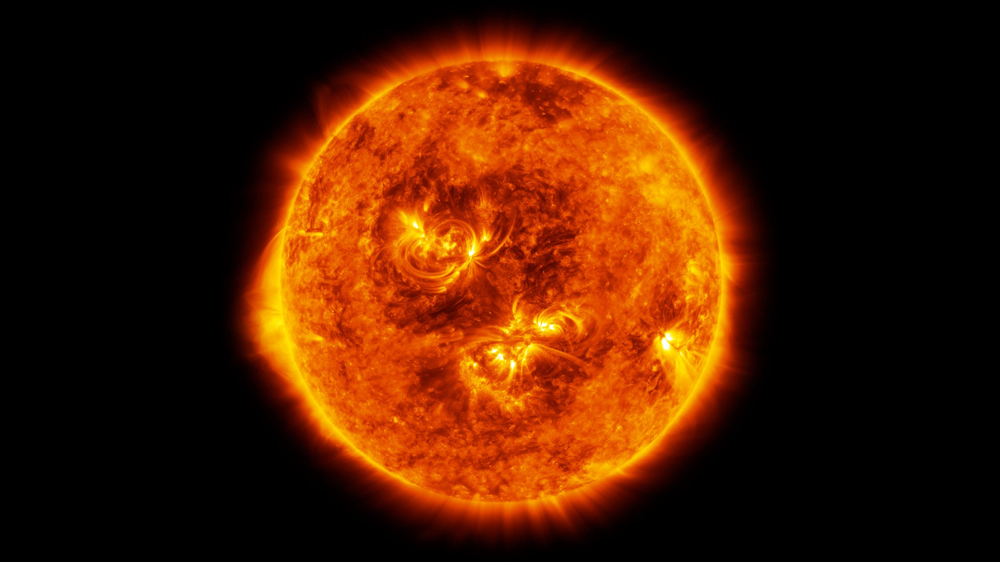
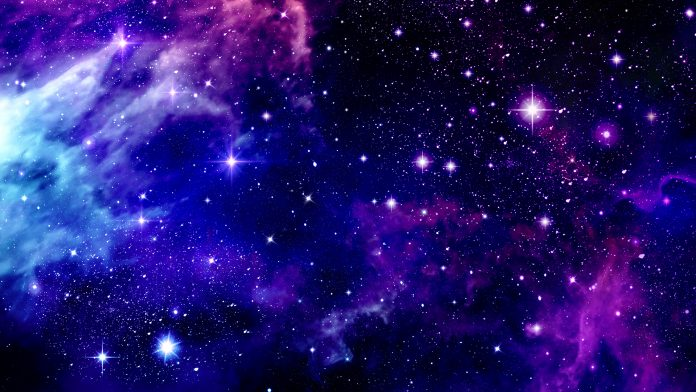

The Sun is the star at the center of the Solar System. It is a nearly perfect ball of hot plasma,heated to incandescence by nuclear fusion reactions in its core, radiating the energy mainly as visible light, ultraviolet, and infrared radiation. It is the most important source of energy for life on Earth. The Sun's diameter is about 1.39 million kilometers (864,000 miles), or 109 times that of Earth. Its mass is about 330,000 times that of Earth, comprising about 99.86% of the total mass of the Solar System.[20] Roughly three-quarters of the Sun's mass consists of hydrogen (~73%); the rest is mostly helium (~25%), with much smaller quantities of heavier elements, including oxygen, carbon, neon, and iron. The Sun is a G-type main-sequence star (G2V). As such, it is informally, and not completely accurately, referred to as a yellow dwarf (its light is closer to white than yellow). It formed approximately 4.6 billion[a][14][22] years ago from the gravitational collapse of matter within a region of a large molecular cloud. Most of this matter gathered in the center, whereas the rest flattened into an orbiting disk that became the Solar System. The central mass became so hot and dense that it eventually initiated nuclear fusion in its core. It is thought that almost all stars form by this process. Every second, the Sun's core fuses about 600 million tons of hydrogen into helium, and in the process converts 4 million tons of matter into energy. This energy, which can take between 10,000 and 170,000 years to escape the core, is the source of the Sun's light and heat. When hydrogen fusion in its core has diminished to the point at which the Sun is no longer in hydrostatic equilibrium, its core will undergo a marked increase in density and temperature while its outer layers expand, eventually transforming the Sun into a red giant. It is calculated that the Sun will become sufficiently large to engulf the current orbits of Mercury and Venus, and render Earth uninhabitable – but not for about five billion years. After this, it will shed its outer layers and become a dense type of cooling star known as a white dwarf, and no longer produce energy by fusion, but still glow and give off heat from its previous fusion. The enormous effect of the Sun on Earth has been recognized since prehistoric times. The Sun was thought of by some cultures as a deity. The synodic rotation of Earth and its orbit around the Sun are the basis of some solar calendars. The predominant calendar in use today is the Gregorian calendar which is based upon the standard 16th-century interpretation that the Sun's observed movement is primarily due to it actually moving.
A star is an astronomical object comprising a luminous spheroid of plasma held together by its gravity. The nearest star to Earth is the Sun. Many other stars are visible to the naked eye at night, but their immense distances from Earth make them appear as fixed points of light. The most prominent stars have been categorised into constellations and asterisms, and many of the brightest stars have proper names. Astronomers have assembled star catalogues that identify the known stars and provide standardized stellar designations. The observable universe contains an estimated 1022 to 1024 stars. Still, most are invisible to the naked eye from Earth, including all individual stars outside our galaxy, the Milky Way. A star's life begins with the gravitational collapse of a gaseous nebula of material composed primarily of hydrogen, along with helium and trace amounts of heavier elements. Its total mass is the main factor determining its evolution and eventual fate. A star shines for most of its active life due to the thermonuclear fusion of hydrogen into helium in its core. This process releases energy that traverses the star's interior and radiates into outer space. At the end of a star's lifetime, its core becomes a stellar remnant: a white dwarf, a neutron star, or—if it is sufficiently massive—a black hole. Stellar nucleosynthesis in stars or their remnants creates almost all naturally occurring chemical elements heavier than lithium. Stellar mass loss or supernova explosions return chemically enriched material to the interstellar medium. They are then recycled into new stars. Astronomers can determine stellar properties—including mass, age, metallicity (chemical composition), variability, distance, and motion through space—by carrying out observations of a star's apparent brightness, spectrum, and changes in its position in the sky over time. Stars can form orbital systems with other astronomical objects, as in the case of planetary systems and star systems with two or more stars. When two such stars have a relatively close orbit, their gravitational interaction can significantly impact their evolution. Stars can form part of a much larger gravitationally bound structure, such as a star cluster or a galaxy.
